Archifafa
Petit manuel de prise en main de l'atelier maquette « Nomade aux étoiles »
Archifafa est un atelier pour jouer avec la maison Nomade aux étoiles : tu assembles des cellules, tu changes les ouvertures, tu regardes le résultat en 3D, puis tu obtiens les plans, les fiches de fabrication des cadres et la liste du bois. Rien ne se casse : tu peux tout essayer, et recharger un modèle de départ à tout moment.
À ouvrir sur un ordinateur, dans un navigateur récent : sylvain441.github.io/archifafa
1. L'écran d'un coup d'œil
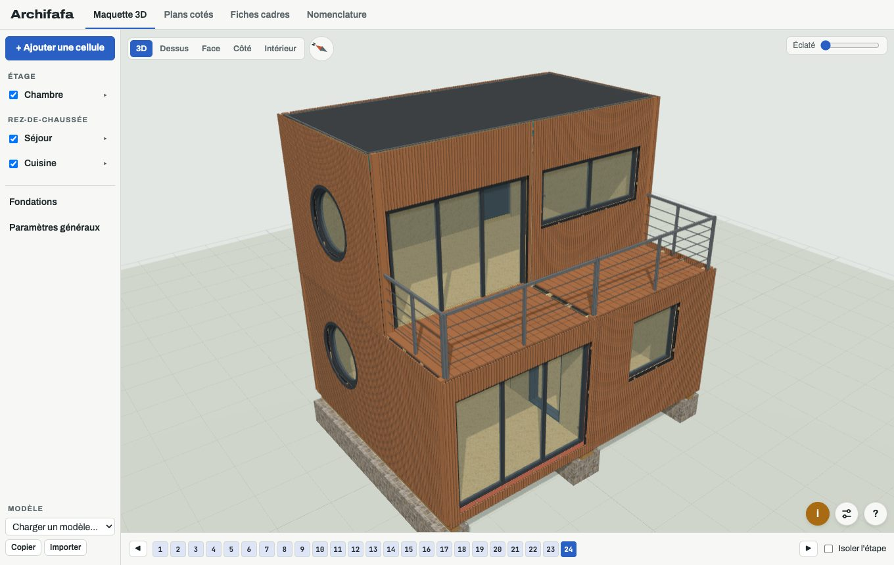
123456789- Les 4 onglets. Maquette 3D (là où on joue), Plans cotés, Fiches cadres, Nomenclature. Les trois derniers se mettent à jour tout seuls quand tu modifies la maquette.
- Ajouter une cellule. Une cellule est un « module » de maison. Voir le chapitre 4.
- La liste des cellules. Une ligne par cellule, rangées par étage. La case à cocher cache ou montre la cellule dans la 3D ; le nom ouvre ses réglages ; la flèche ▸ déplie ses parois. « Fondations » et « Paramètres généraux » sont en dessous.
- Modèle. Charger un modèle de départ (Prototype d'Yves, une cellule, deux cellules, en L, deux niveaux). Copier met ta maison dans le presse-papiers sous forme de texte ; Importer la recharge. C'est ta sauvegarde : colle le texte dans un mail ou un fichier.
- Les vues. 3D libre, Dessus, Face, Côté, et Intérieur (tu te places dans la cellule sélectionnée, à hauteur d'yeux).
- La boussole. Indique le nord. Les cellules sont orientées Nord-Sud ou Est-Ouest.
- Éclaté. Écarte les pièces pour voir comment tout s'assemble. Remets le curseur à gauche pour revenir.
- Les trois boutons ronds. Vérifications (avertissements), Affichage (calques, coupe, couleurs) et Aide (souris et clavier).
- La construction pas à pas. 24 étapes, des fondations au bardage. Voir le chapitre 3.
2. Se déplacer dans la 3D
Le bouton ? en bas à droite rappelle tout ça. L'essentiel :
| Souris | |
|---|---|
| Glisser | Tourner autour du point visé |
| Clic droit + glisser | Se déplacer |
| Molette | Zoomer vers le curseur |
| Double-clic | Centrer la vue sur ce point |
| Survol d'une paroi | Un bouton rond apparaît au centre : il ouvre les réglages de la paroi (le clic droit aussi) |
| Clavier | (clavier AZERTY) |
| Z Q S D ou flèches | Avancer, aller à gauche, reculer, aller à droite |
| R F | Monter, descendre |
| Maj | Aller plus vite |
| Échap | Fermer le panneau de réglages |
Les boutons Dessus, Face et Côté donnent des vues à plat, pratiques pour vérifier un alignement. Intérieur te met dans la pièce.
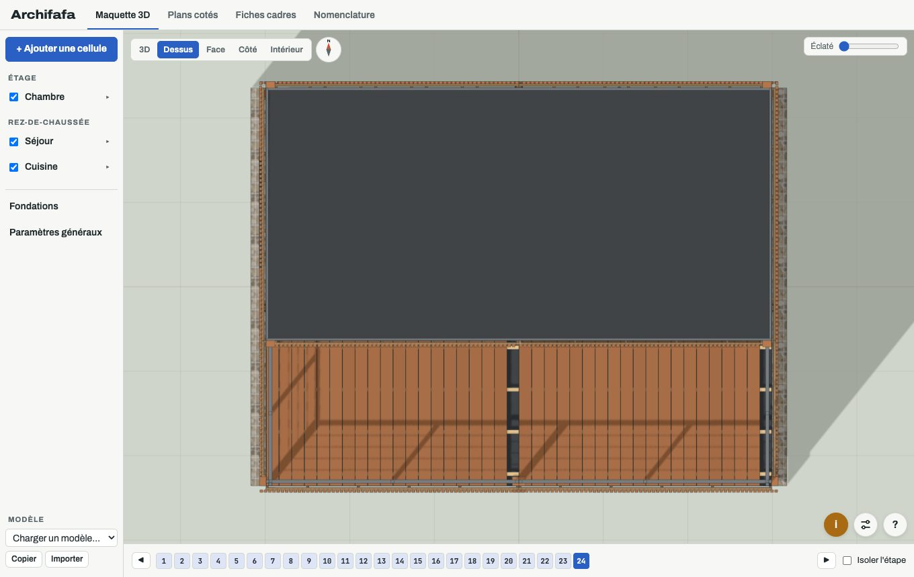
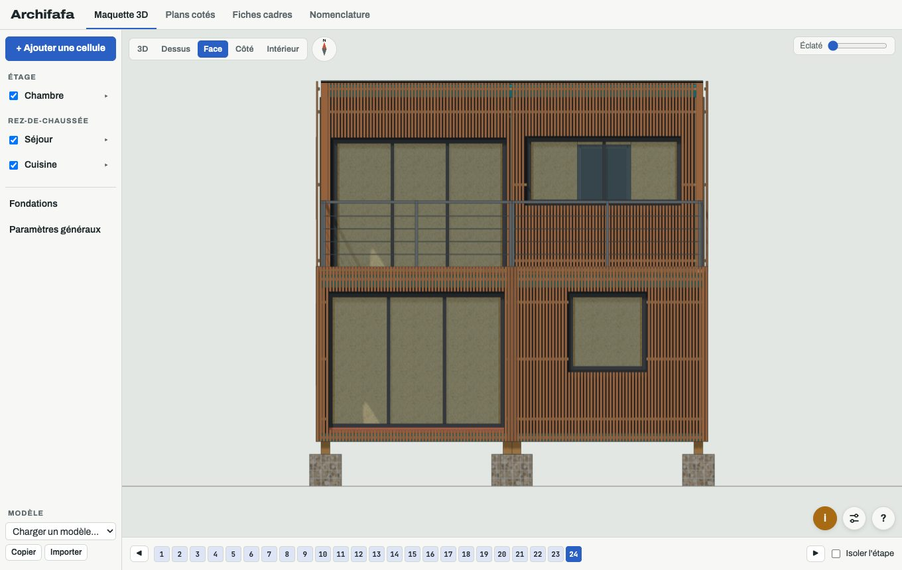
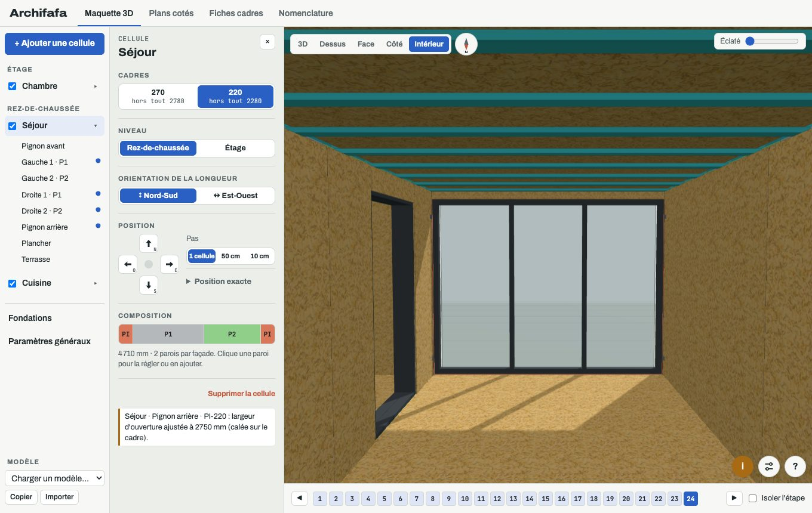
3. Voir la construction étape par étape
La barre du bas contient les 24 étapes du tutoriel de construction. Clique sur un numéro : seules les pièces posées jusqu'à cette étape restent affichées. Ici, étape 8 : le plancher et les murs, avec leur code couleur.
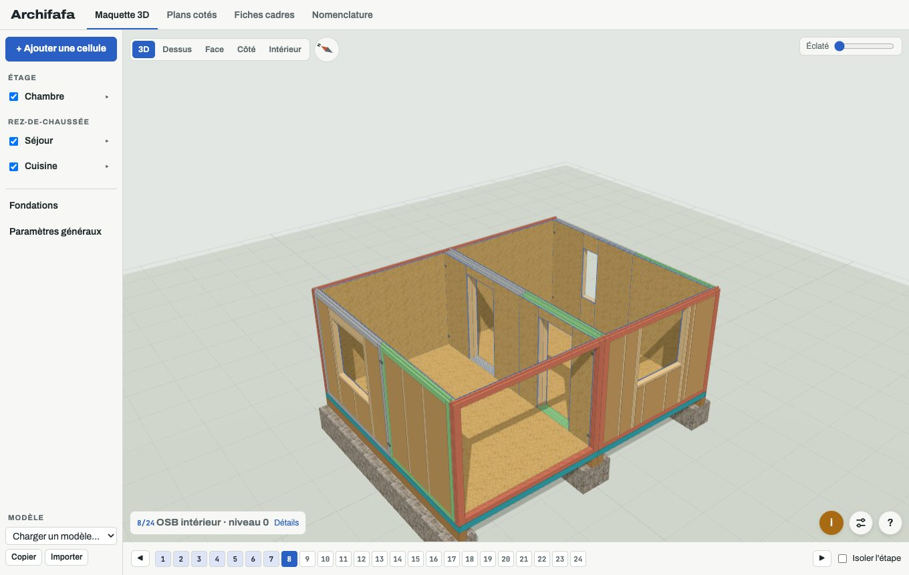
1234- La fiche de l'étape. Numéro, nom de l'étape et lien « Détails ».
- Les numéros d'étapes. Clique pour sauter à une étape ; les flèches ◀ ▶ avancent ou reculent d'une étape.
- Isoler l'étape. Ne montre que les pièces de cette étape, sans les précédentes.
- Les couleurs. Dans cette vue, chaque type de cadre a sa couleur (celle du tutoriel). Tu peux passer en « bois naturel » dans Affichage.
4. Modifier la maison
Régler une cellule
Clique sur le nom d'une cellule dans la liste (ici « Séjour ») : un panneau de réglages s'ouvre entre la liste et la 3D, et la cellule est entourée en bleu.
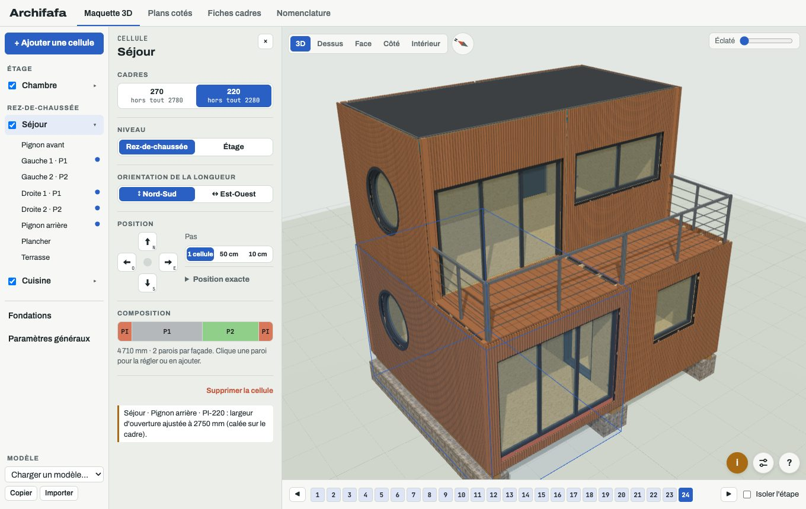
1234567- Cadres. Deux gabarits : 270 (hors tout 2780 mm) ou 220 (2280 mm). C'est la taille des panneaux qui composent la cellule.
- Niveau. Rez-de-chaussée ou étage.
- Orientation de la longueur. Nord-Sud ou Est-Ouest.
- Position. Déplace la cellule avec les flèches. « Pas » règle la distance : une cellule entière, 50 cm ou 10 cm. « Position exacte » permet de saisir des valeurs.
- Composition. Les parois d'une façade, de gauche à droite (PI = pignon, P1/P2 = parois). Clique sur une paroi pour la régler.
- Supprimer la cellule. Efface la cellule (tu peux toujours recharger un modèle).
- Les parties de la cellule. En dépliant la cellule, tu accèdes directement à chaque pignon, paroi, plancher et terrasse. Un point bleu signale une paroi qui a une ouverture.
Régler une paroi
Clique sur une paroi dans la 3D (clic droit, ou bouton rond au survol), ou sur son nom dans la liste.
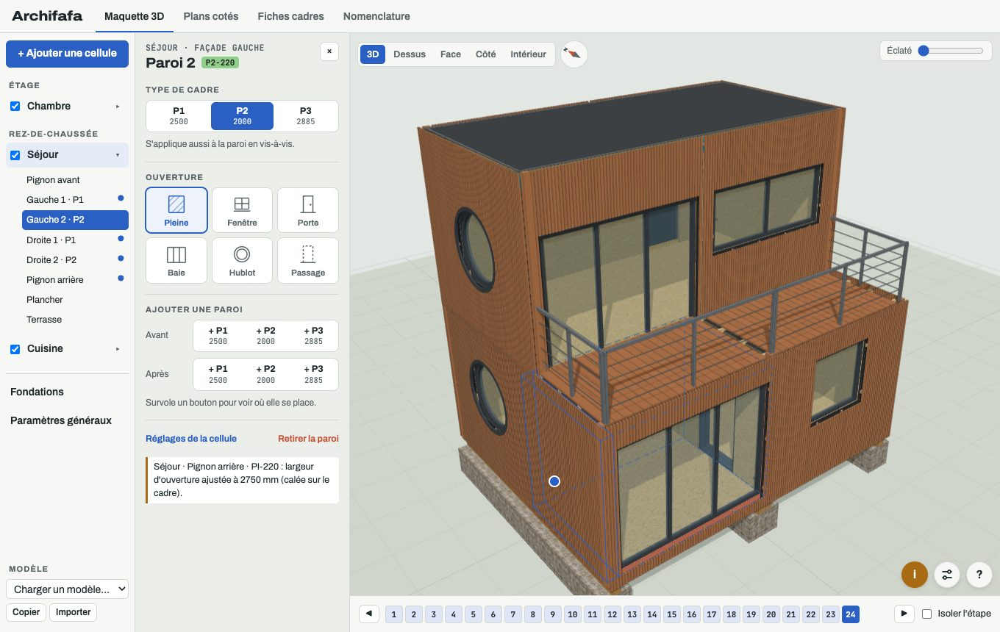
12345- Type de cadre. P1 (2500 mm), P2 (2000 mm) ou P3 (2885 mm) : la largeur du panneau. Le changement s'applique aussi à la paroi d'en face.
- Ouverture. Pleine, Fenêtre, Porte, Baie, Hublot ou Passage. Le résultat apparaît tout de suite en 3D.
- Ajouter une paroi. Insère un panneau P1, P2 ou P3 avant ou après celle-ci. Survole un bouton pour voir où elle se placera : la cellule s'agrandit.
- Retirer la paroi. Enlève ce panneau. « Réglages de la cellule » à gauche ramène au panneau précédent.
- La paroi choisie. Entourée en bleu, avec le bouton rond au centre.
Ajouter une cellule
Clique sur + Ajouter une cellule, puis sur l'un des boutons + bleus qui apparaissent autour de la maison : la nouvelle cellule se colle à cet endroit. « Annuler » dans le bandeau noir ou sur le bouton de gauche pour renoncer.
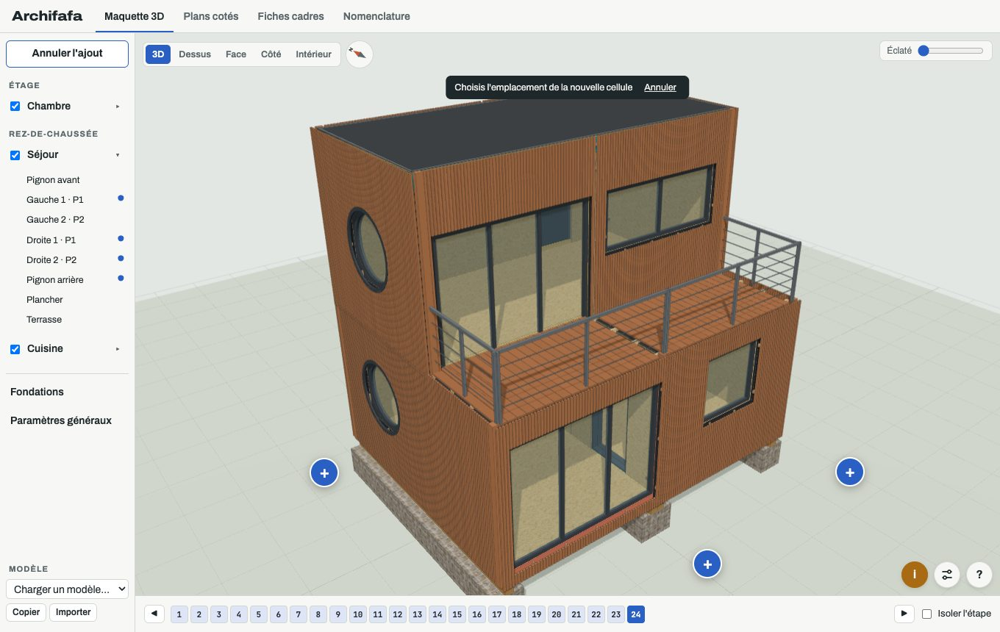
12333- Le bouton devient « Annuler l'ajout ». Un clic dessus pour renoncer.
- La consigne. « Choisis l'emplacement de la nouvelle cellule. »
- Les emplacements possibles. Un bouton + par côté libre ; clique sur celui que tu veux.
5. Les outils de la vue 3D
Les trois boutons ronds en bas à droite ouvrent des fenêtres quand on les survole.
Affichage : calques, coupe, couleurs
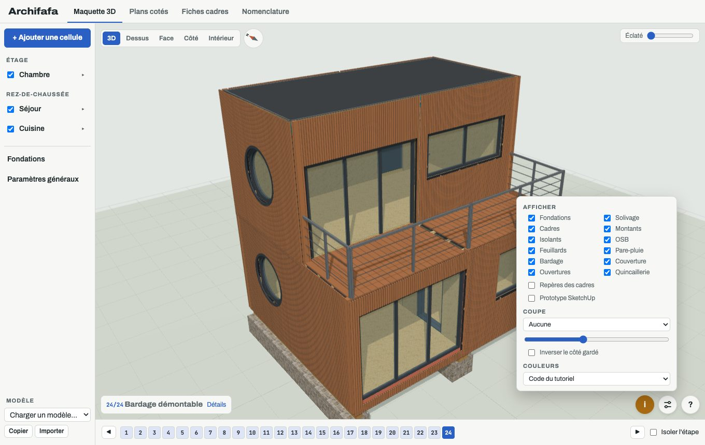
1234- Afficher. Une case par famille de pièces : fondations, cadres, isolants, feuillards, bardage, ouvertures, solivage, montants, OSB, pare-pluie, couverture, quincaillerie. Décocher les couches du dessus permet de voir à l'intérieur des murs.
- Repères des cadres et Prototype SketchUp. Étiquettes sur chaque cadre ; et le modèle SketchUp d'origine en surimpression pour comparer.
- Coupe. Un plan de coupe horizontal, ou vertical Est-Ouest ou Nord-Sud. Le curseur dessous le déplace ; « Inverser le côté gardé » change la moitié conservée.
- Couleurs. « Code du tutoriel » (un type de cadre = une couleur) ou « Bois naturel ».
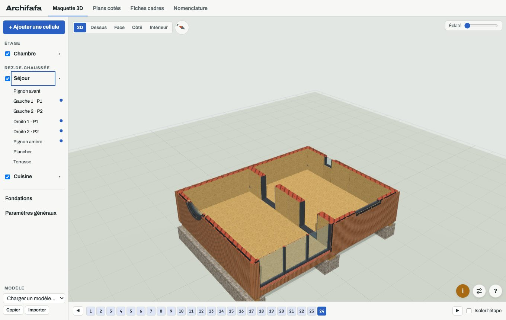
Éclaté et vérifications
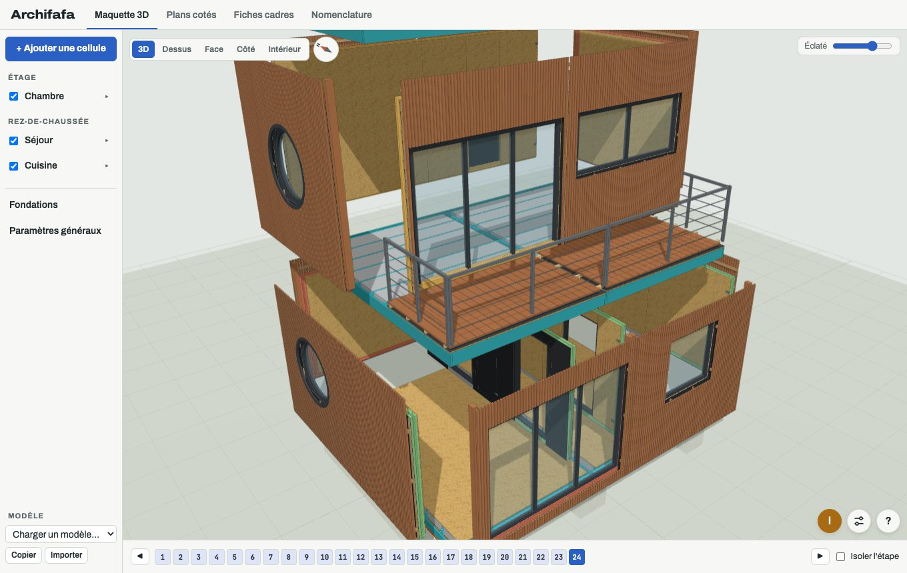
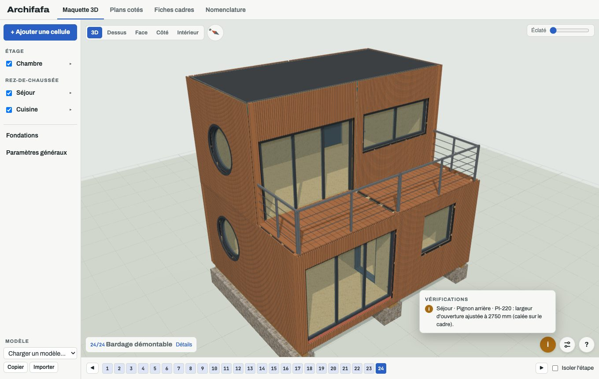
6. Les trois autres onglets
Ils se calculent à partir de ce que tu as dessiné, sans rien à saisir.
Plans cotés
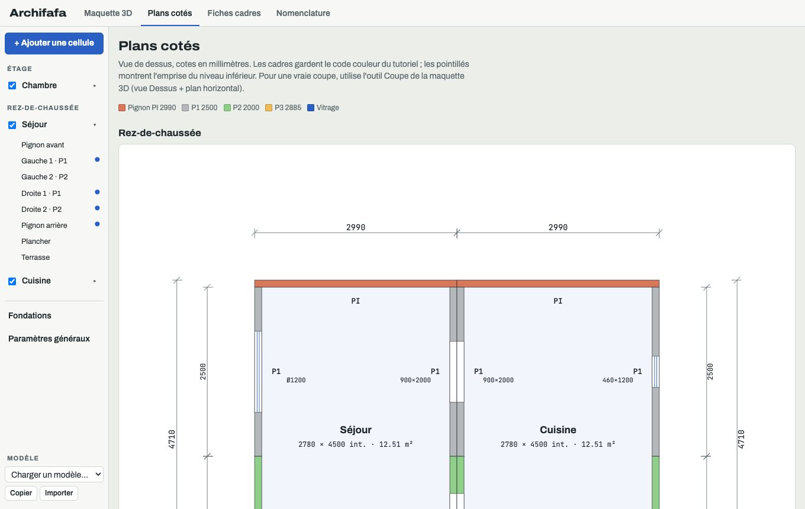
123- Légende des couleurs. Les cadres gardent le code du tutoriel ; les pointillés montrent l'emprise du niveau inférieur.
- Les cotes. Tout est en millimètres, vu de dessus, un plan par niveau.
- Les pièces. Nom, dimensions intérieures et surface.
Fiches cadres
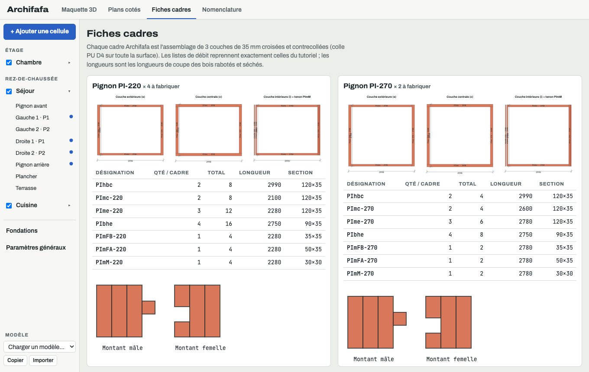
Nomenclature
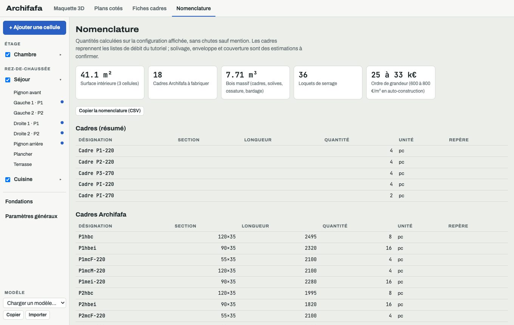
123- Les totaux. Surface intérieure, nombre de cadres à fabriquer, volume de bois, loquets de serrage et ordre de grandeur du budget.
- Copier la nomenclature (CSV). Pour la coller dans un tableur.
- Les tableaux. Cadres, bois de structure, enveloppe, couverture : ce qu'il faut acheter ou débiter.
7. Pour bien démarrer
- Dans Modèle, charge « Prototype d'Yves » : c'est la maison de référence.
- Fais défiler les étapes pour comprendre comment elle se construit.
- Clique sur une paroi et transforme une fenêtre en porte, ou une paroi pleine en baie.
- Charge « Une cellule » ou « Deux cellules en L » et ajoute des cellules pour inventer ta propre disposition.
- Ouvre Plans cotés et Nomenclature pour voir ce que ton idée demanderait en bois.
- Quand tu es content : Copier, et garde le texte quelque part. Tu pourras le recharger avec Importer.
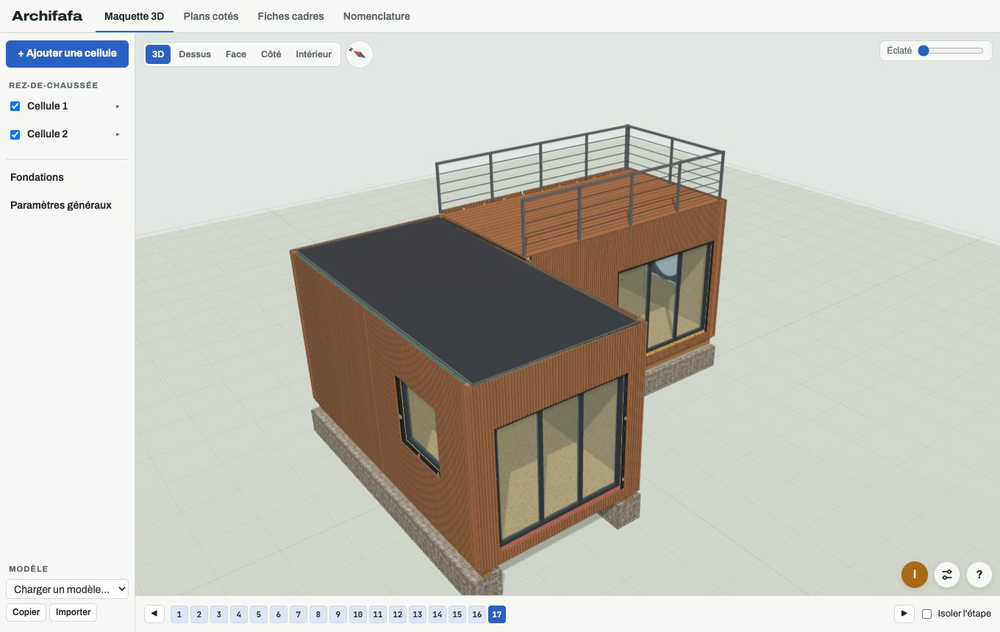
Atelier en cours d'amélioration : si quelque chose te résiste, dis-le, c'est précieux.